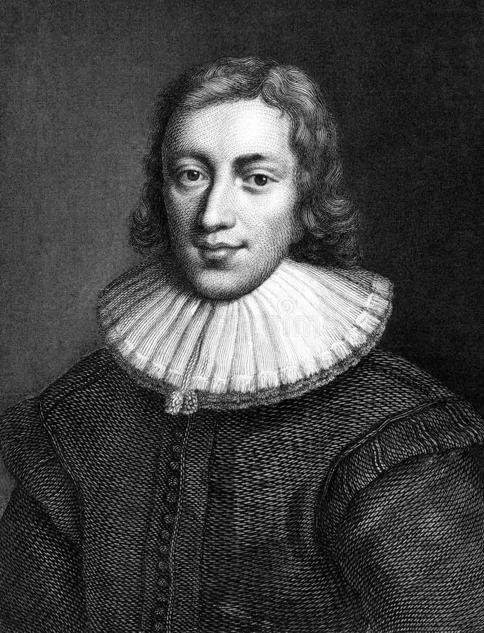

МІЛЬТОН, Джон (Milton, John — 09.12.1608, Лондон — 08.11.1674, там само) — англійський поет.Мільтон — один із найбільших епічних поетів Англії, автор "Втраченого раю", "Історії Британії", памфлетист, захисник релігійних, громадянських і політичних свобод — народився в сім'ї нотаріуса та композитора Джона Мільтона. Здобув освіту у школі св. Паала, заснованій у XVI ст. Тут він зазнайомився з Діодатті Чарлзом, сином італійського протестанта, заприятелював з ним і присвятив йому дві чудові елегії. Подальшу освіту продовжив у Кембриджі, здобув у 1626 р. ступінь бакалавра, а в 1632 р. — ступінь магістра. Спочатку мислив себе священиком, готувався до прийняття сану, писав вірші, переважно латинською та італійською мовами, на релігійні теми. Перша англійська поезія "На смерть чудового дитяти" (1628) була написана з нагоди смерті його племінниці Анни Філіпс. "Святкова прогулянка" та "Ранок Різдва Христового" (1629) написані з використанням барокової образності чудовими стансами, які засвідчили неабияку майстерність автора. У 1630 р. був написаний твір "Пристрасть", а згодом пасторальні "Аркади", представлені графині Дербі в Херфілді спільно з Г. Лоуесом, відомим англійським композитором, автором численних пісень. У 1631 р. з'явилися дві епітафії, присвячені кембриджському посильному Хобсону, "Про Шекспіра", а також епітафія маркізі Вінчестерській. Його знамениті "Життєрадісний"("L'Allegro"); "Задумливий" ("Penseroso"), присвячені описові радощів від занять медитацією, є попередниками медитативної лірики XVIII ст., зокрема "цвинтарної школи", відлуння цих творів відчутне в "Елоїзі та Абелярі" А. Поупа. Вони написані в Кембриджі, а також в Хеммерсміті, куди батько Мільтона перебрався в 1631—1632 pp.
Закінчивши Кембридж, Мільтон ще остаточно не вибрав собі фаху, вагаючись поміж саном священика і кар'єрою поета. У 1634 р. виходить його "Ad Patrem", що нагадало батькові про можливі альтернативи у виборі фаху. У 1634 р. Мільтон за порадою свого приятеля композитора Лоуеса створив пастораль "Comus", яка була опублікована анонімно в 1637 р. Пастораль була поставлена в замку Ладлоу з нагоди призначення графа Джона Бріджуотера лордом-президентом Уельсу. Вочевидь, понад усе для означення жанру "Комуса "підходить пасторальна драма. Комус — ім'я язичницького бога, вигаданого самим Мільтоном, він — син Бахуса та Цірцеї, заводить подорожніх у ліс і обертає за допомогою чаклунства на звірів. Одна дама, що заблукала в лісі, потрапляє в полон до Комуса. Брати, котрі її супроводжують, дізнаються про те, що трапилося, й отримують від доброго чарівника, перевдягненого пастухом, корінь рослини, який має визволити даму від чарів Комуса. Усі наполегливі спроби Комуса спокусити даму не мають успіху. Комус розуміє її перевагу. З допомогою богині ріки Северн Сабріни дама остаточно звільняється від чарів Комуса і повертається у замок Ладлоу в супроводі двох братів. Ролі в пасторальній драмі виконували донька Мільтона Аліса та її молодші брати. Драма написана і білим віршем, і римованими восьмивіршами. У ній міститься величезна кількість християнських, язичницьких алюзій, тут присутня типово декоративна образність пасторалі, безпосередність і жвавість єлизаветинської драми та магічний чар спенсерівської "Королеви фей".
У 1635 p. Мільтон переселився в Бакінгемшир, де продовжив свої студії італійської та класичних мов, приділяючи належну увагу і вивченню праць отців церкви. У 1637 р. він створив елегію "Лісіди" ("Lycidas"). Швидше всього, це пасторальна поема, присвячена пам'яті Едварда Кїнґа, з котрим М. навчався у Кембриджі і котрий утопився, вирушивши на кораблі в Дублін. Як і Мільтон, Кінг мав незвичайні поетичні здібності та виявляв зацікавленість до вивчення історії релігії. Хоча Кінг не був близьким приятелем Мільтона, його загибель дуже вплинула на останнього, викликавши в його душі помисли про передчасну смерть, про марноту людських прагнень і шанолюбних бажань. Ця поема містить чимало суперечливих висловлювань і думок Мільтона, котрий, вочевидь, перебував у стані душевного сум'яття після сильного потрясіння. Мільтон також страждав від неможливості втілити свої поетичні задуми. Упродовж наступних тридцяти літ він не створив будь-яких значних творів, за винятком кількох віршів, написаних латиною та італійською мовами; сонетів, з яких варто згадати "Про недавню різанину в П'ємонті", послань до Кромвеля, Ферфакса, Вейна і композитора Лоуеса, з котрим співпрацював під час написання "Комуса "й "Аркадій" , та деяких своїх юних друзів. Протягом двох років Мільтон жив за кордоном (1637— 1639), переважно в Італії, де зустрічався з відомим голландським дипломатом та юристом Г. Гроцієм (1583—1645) і засудженим Г. Ґалілеєм, котрий перебував у вигнанні під Флоренцією. Гроцій був голландським послом в Англії, писав трактати і навіть драми. Як юрист, фахівець з міжнародного права, Мільтон відомий своїм трактатом "De jure Belli ас Pads", опублікованим у 1625 p. Після повернення із закордонної подорожі Мільтон цілковито присвятив себе заняттям зі своїми племінниками — братами Джоном і Едвардом Філіпсами. Обидва вони надалі тісно пов'яжуть свою долю з літературною діяльністю. Едвард Філіпс був автором філологічного словника англійських неологізмів (1658), літературних біографій сучасників; Джон уславився травестіюванням "Дон Кіхота", перекладами М. де Скюдері й Калпренеда. Саме тоді Мільтон захопився ідеєю створення епічної поеми, присвяченої королю Артуру, про котрого він пише в епітафії Діодатті, який помер за час дворічної відсутності Мільтона. Тепер Мільтон зайнявся також і політичною діяльністю, доволі активно взявся за журналістику, опублікував низку памфлетів на захист єпископату, провадив диспут із єпископами Джозефом Голлом і Джеймсом Ашером. Д. Голл (1574— 1656) здобув освіту у Кембриджі. Це видатна особистість, надзвичайно оригінальний літератор, котрий почав писати сатири на кшталт Ювенала та започаткував опис характерів, реформатор жанру проповіді. Д. Ашер (15881—1656) — ірландський єпископ, котрий написав ірландською мовою історію світу від його початку і до вигнання євреїв за часів імператора Веспасіана, що згодом вважатиметься джерелом авторизованого варіанту Біблії. Публіцистика Мільтона 40-х pp. відображає розмаїття інтересів поета. Один за одним з'являються памфлети Мільтона: "Ареопагітика" ("Areopagitica", 1644), "Іконоборець" ("Eikonoklastes", 1649), "Захист англійського народу"("Pro Populo Anglicano Defensio", 1650). Мільтон виступає супротивником монархізму та прибічником буржуазної республіки. В "Ареопагітиці" вимальовується образ громадянина республіки, яким уявляє його собі Мільтон: людина-борець, котра відважно обстоює свої переконання. У 1642 p. Мільтон одружився з дочкою рояліста Мері Поуел, з котрою розлучиться напередодні громадянської війни. У 1643 р. вийшов памфлет М. "Доктрина й інститут розлучення", у якому він обстоював принцип необхідності духовної спорідненості подружжя, що зробило його ім'я одіозним і стало приводом для опублікування ним ще декількох трактатів на цю тему. Серед них варто згадати "Тетрахордон" — чималий твір, близько 110 сторінок. Тетрахордон — це чотириструнна грецька ліра. У 1644 р. був опублікований трактат "Про освіту", присвячений С. Гартлібу, німцеві з походження, котрий навчався у Кембриджі у 1621— 1626 pp. і став приятелем Мільтона. У тому ж році в трактаті "Ареопагітика" Мільтон захищає свободу друку. Мільтон мав на увазі не лише свободу преси, а й свободу проповідей незалежно від політичних переконань. У 1645 р. до Мільтона повернулася дружина, якої він не бачив три роки. У нього народилися три доньки та син, котрий помер немовлям. На цей час у країні загострилася боротьба між пресвітеріанами й індепендентами. Після страти Карла І Мільтон опублікував трактат "Обов'язки правителів та уряду" (1649), у якому доводив, що король не виконав своїх зобов'язань перед народом, а тому й заслуговував смертної кари за те, що зрадив своєму обов'язку і призвів свою Англію до громадянської війни. Він також стверджував, що народ має право скидати і карати тиранів, критикував пресвітеріан, котрі, на його переконання, становили серйозну загрозу свободі. За республіканського уряду Мільтон отримав пост латинського секретаря при Державній раді. У його обов'язки входило провадження справ і листування латиною. Увагу сучасників привернула відповідь, яку М. дав єпископу Годену — авторові книги "Портрет його найсвятішої величності у його самотності та медитаціях". Ця книга була опублікована після страти короля, і колишній монарх представлений у ній як особистість вельми достойна та видатна. Вступивши у суперечку з Годеном, Мільтон писав про короля не як про великомученика, а як про зрадника. На захист короля виступив француз — лейденський професор Сальмазіус, котрий звинувачував Мільтона в антимонархізмі, на що Мільтон відгукнувся латинським трактатом "Захист англійського народу". Цей трактат здобув Мільтону європейську славу і водночас накликав на нього ненависть роялістів. У Парижі й Тулузі цей трактат було піддано публічному спаленню. У 1660 p. Мільтон написав трактат "Істинний і легкий шлях до створення вільної Співдружності", у якому він захищає республіканізм і намагається зупинити зростаючий вплив роялістів. Важким був перебіг особистого життя поета: його перша дружина померла у 1652 р. Через чотири роки Мільтон одружився вдруге, але й друга дружина його теж невдовзі померла. Від напруженої праці Мільтон втрачав зір. Після реставрації монархії Мільтону довелося переховуватись від властей. Він був заарештований, але завдяки втручанню впливових осіб його звільнили. Мільтон взявся за написання поеми "Втрачений рай" ("Paradis Lost"). Відомо, що найперші начерки цього твору датуються 1642 р. Поема була завершена у 1663 p., однак питання про публікацію постало тільки у 1667 р. У 1671 р. була видана поема Мільтона "Повернений рай" ("Paradis Regained") і в цьому ж році опублікована трагедія "Самсон-борець" ("Samson Agonistes"). За ними вийшла "Історія Британії" ("The History of Britain", 1670). Різноманітними є поетичні жанри, що їх використовував Мільтон у своїй творчості.